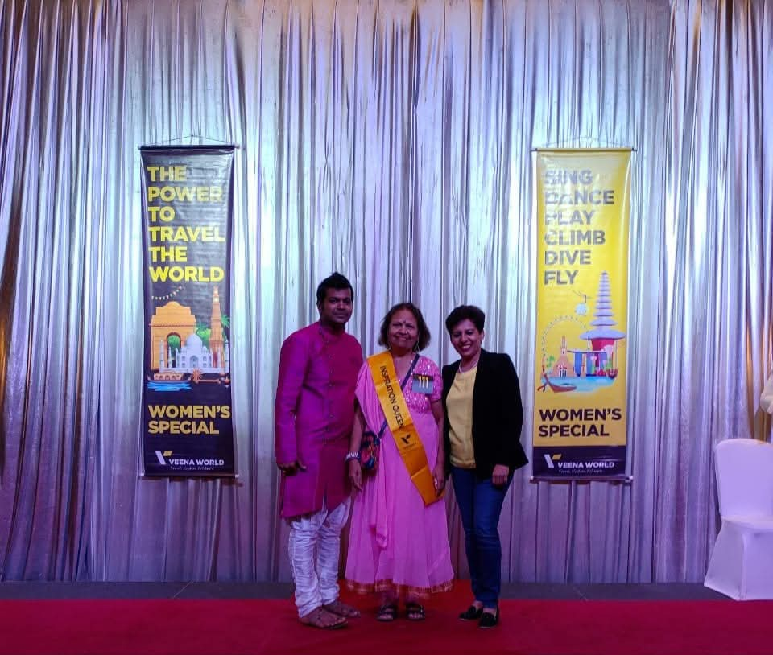
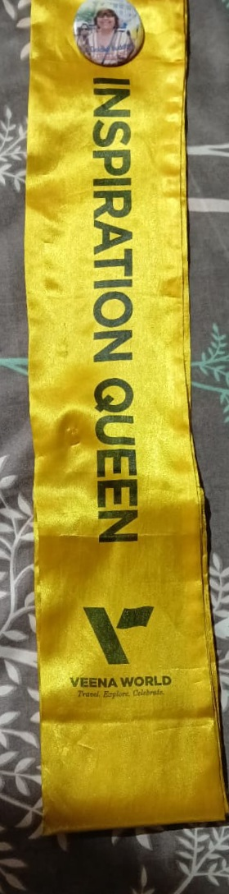
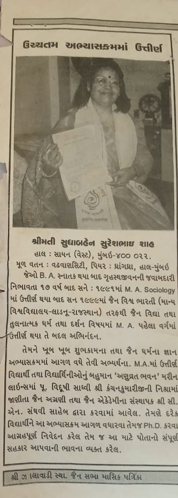
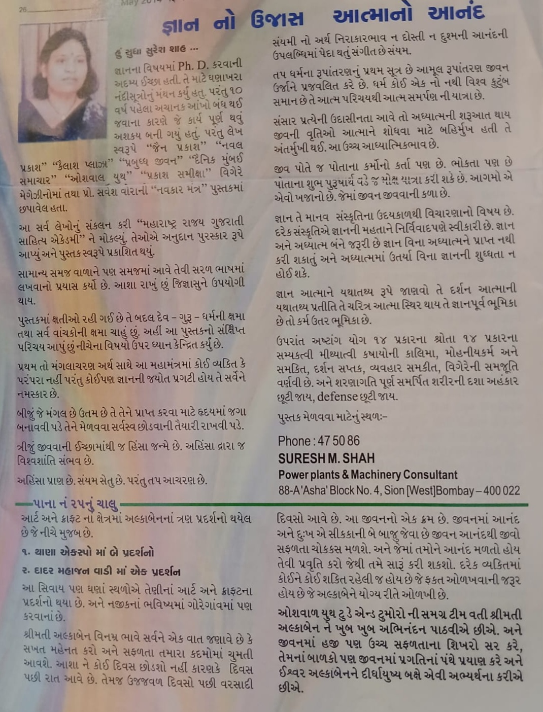
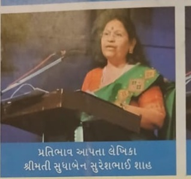

I got awarded as the Most Inspirational Woman in Thailand. It was an unforgettable honor and a reminder that dedication and courage can inspire many.

Wearing the Inspirational Queen sash was a proud and emotional moment. It symbolized not just the recognition, but the journey that led to it.
As I sit down to pen my thoughts at the age of 73, I am filled with a sense of pride and nostalgia, reflecting on a life well-lived. My journey began in a small town, where from a young age, my creativity and zest for life set me apart. Whether it was helping in the kitchen, engaging in spirited shopping excursions, or excelling in my studies, I was always an active and enthusiastic participant in all aspects of life.
In a family where most members were barely SSC (Secondary School Certificate) pass, I emerged as the first to pursue higher education. It wasn't easy, growing up in a male-dominated and orthodox society that believed girls should not study or travel beyond the confines of their home. Yet, I was determined to break these shackles. I fought for my right to education and managed to complete my Bachelor of Arts (BA). At the age of 25, I stepped into the so-called reality of life, embracing the roles within the "samaj" (society), which included marriage and familial relationships.
My marriage was a significant chapter in my life. It brought with it the expected responsibilities and roles. However, my spirit was never one to settle. At 45, a pivotal moment arrived when I reconnected with my personal goals and aspirations. I felt a renewed sense of purpose and decided to pursue further studies. With my family's support, especially my husband’s unwavering encouragement, I made the bold decision to move to Mumbai and enroll in a Master of Arts (MA) program. Balancing the roles of a spouse and a student was challenging, but I thrived on the experience, gaining both knowledge and a deeper understanding of myself.
The journey to Mumbai was not just a physical relocation but a profound inner voyage. It was a testament to my resilience and unwavering commitment to personal growth. Through my studies, I not only earned a degree but also reaffirmed my belief in the power of perseverance and lifelong learning.
In the later years, with my husband's support, I pursued my interest in Jain philosophy, deepening my understanding of its teachings and incorporating its principles into my life. This period was also marked by my passion for writing. I began authoring books on the importance of women in a male-dominant society, sharing my insights and experiences.
Throughout my life, I have been honored with many awards. One of the most cherished was being named the "Most Inspiring Woman" in Thailand by Ms. Veena, a recognition that celebrated my journey and the impact I have had on others.
Looking back, my life has been a beautiful tapestry of challenges and triumphs. It reminds me that with determination and support, anything is possible.


